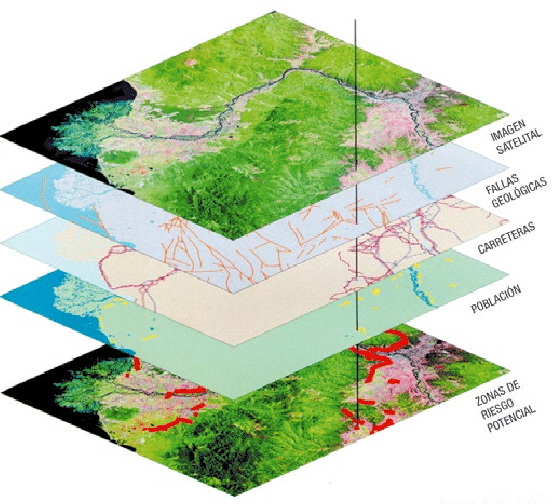
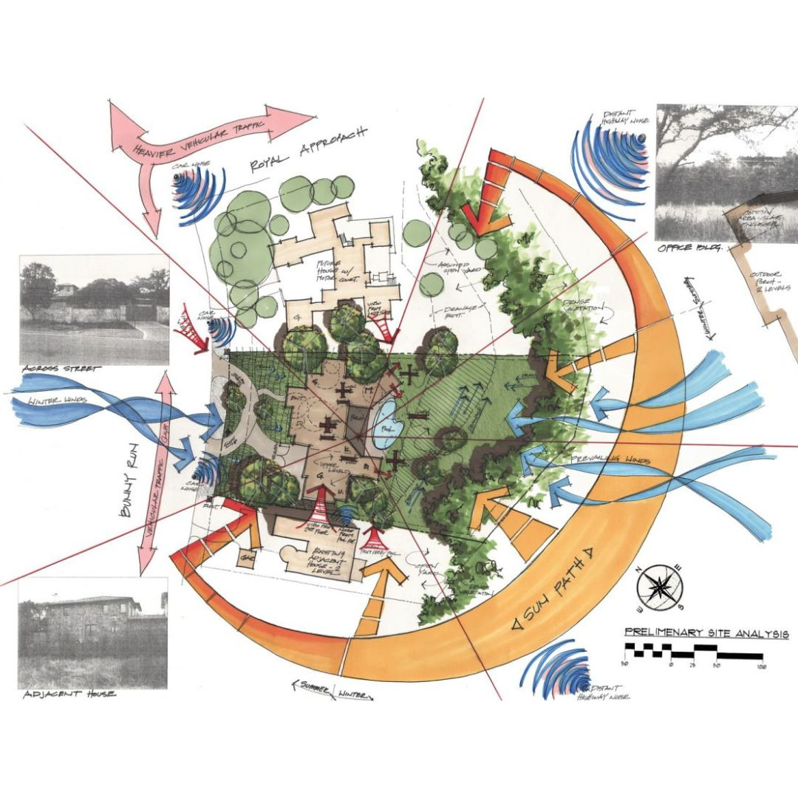
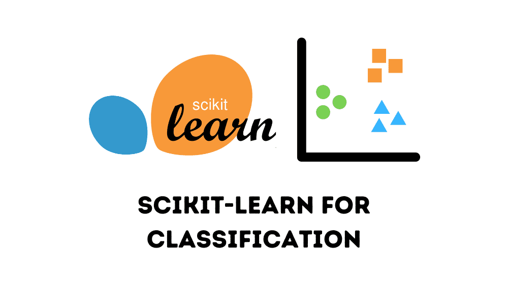

Especialista SIG
Áreas de especialización:
Representación de datos
Analítica de Geodatos espaciales
Estadística descriptiva
La representación de datos puede llevarse a cabo en series, imágenes 2D, 3D, 4D (relacionadas con el tiempo) y 5D.
Series, 3D, 2D, 4D, 5D

Los requerimientos deben ser definidos para orientar el rumbo del proyecto a desarrollar. Estos determinan la arquitectura, las necesidades de las partes interesadas y el desarrollo paso a paso del proyecto.
Requerimientos, Arquitectura, Desarrollo

Esta área utiliza bibliotecas como Numpy y Pandas, que permiten realizar un análisis descriptivo de datos específicos.
Numpy, Pandas
Estadística analítica o proyectiva
Inteligencia artificial geoespacial
Para proyectos de regresión lineal y predicción, utilizamos Scikit-learn, una biblioteca de Python que incluye herramientas para clasificación, regresión, agrupamiento y reducción de dimensionalidad.
Regresión lineal, Scikit-Learn, Predicción

Gracias a la inteligencia artificial, podemos realizar clasificaciones, predicciones y clustering. Para ello, usamos PyTorch, que se emplea para desarrollar y entrenar redes neuronales, así como otros modelos de aprendizaje automático.
Pytorch, Clustering, Pronóstico, Clasificación